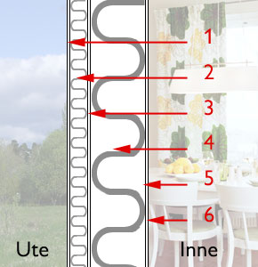

Glanzlichter dieser Seite:
Einleitung
Apokalypsenlyrik
Wärmedämmung oder -speicherung, "Wissenschafterkenntnis" der etablierten Bauphysik?
Kommentierte Meldungen zum Wohnklima und der "Niedrig"-Energiebauweise
Nachhilfeunterricht in energiesparendem und wohngesundem Bauen - Das Professorenrätsel
Interessante Schimmellinks
Prof. Dr.-Ing. habil. Claus Meier bauphysikalische Beiträge
Empfehlenswerte Klima- und Umweltliteratur
Temperierung/Strahlungsheizung - der vernünftige Weg zum Energiesparen
Anfragen und Antworten zu Bauproblemen
Das Handwerkerquiz + Das Planerquiz für schlaue Bauherrn
Leserbriefe zum besseren Bauen, Energiesparen und der Klimafrage
Fenster-"Aufklärung"
Dämmstoffe im Zwielicht - Das Lichtenfelser Experiment
Dr. Ulrich Berner, Geozentrum Hannover, zu den gängigen Klimalügen
(Buderus-/IWO-Forum: Die Ölheizung der Zukunft, 28.10.03, Kloster Banz)
Dämmstoff-Marketing
Wie redaktionell aufgemachte Reklamebeiträge funktionieren:
VfA Profil 11/98, R. Müller Verlag:
"Bautechnik
Wärmeschutz
Für die Zukunft planen
[Autor: Michael Steiner, Abbild. von Rockwool]
[...] Der Architekt hat sich naturgemäß aber auch den wirtschaftlichen Gegebenheiten unterzuordnen. Er befindet sich in einer Zwickmühle zwischen der Notwendigkeit, so kostensparend wie möglich zu planen, ohne jedoch ökologische Aspekte völlig zu vernachlässigen. Eine einfache Beispielrechnung zeigt jedoch, daß die Dämmung von Gebäuden nicht nur ökologisch, sondern auch ökonomisch durchaus sinnvoll ist.
Grundlage der Rechnung ist ein Einfamilien-Modellhaus mit 120 m² Wohnfläche. Für die Ausstattung entsprechend der Wärmeschutzverordnung von 1995 ist gegenüber dem herkömmlichen Standard ein Mehreinsatz von ca. 80 DM pro m2 Wohnfläche erforderlich, insgesamt also Mehrkosten in Höhe von rund 9.000 DM.
Gleichzeitig sinkt der Energiebedarf unseres Modellhauses um mindestens 90 kWh pro Jahr. Das bedeutet: Bei der Beheizung seiner 120 m2 Wohnfläche spart der Bauherr jedes Jahr etwa 1.080 Liter Heizöl oder rund 780 DM. Nimmt man eine Lebensdauer des Gebäudes von nur 50 Jahren an, summieren sich diese Einsparungen bei einem mittleren Energiepreis von 63 Pfenning auf mindestens 34.000 DM. Bereits nach zehn bis 12 Jahren haben sich die Mehrkosten für einen besseren Wärmeschutz also komplett amortisiert.
Diese Kalkulation beruht auf der Vorstellung, daß die Energiepreise nicht steigen. Für die nächsten Jahre sind jedoch höhere Energiekosten kaum auszuschließen. Entsprechend größer wird in einem solchen Fall langfristig die effektive Ersparnis durch Dämmung, und entsprechend schneller amortisiert sich der Aufwand."
Intelligenzlerische Linguistik dieses Beispiels perfektionierter Kosten-Nutzen-Analyse und Wirtschaftlichkeitsberechnung:
1. Die Kostenberechnung geht von den Mehrkosten gegenüber dem hier unberücksichtigten unwirtschaftlichen Aufwand gem. WSVO 95 aus - "gegenüber dem herkömmlichen Standard"/"Mehrkosten für einen besseren Wärmeschutz". Die Totalunwirtschaftlichkeit der gesamten Dämmerei wird unterschlagen. Bei den getürkten Wirtschaftlichkeitsnachweisen, die die Bundesministerien und die Bundesregierung benutzen, um dem Bundesrat als Gesetzgebungshürde weiszumachen, daß ihre Konzepte keine wirtschaftlichen Schäden anrichten, benutzt man die selben Tricks. Dabei wird als Krönung auch bezüglich der Vollkosten herumgetürkt - oder soll man heute herumgeözdemirt oder wie früher nur angeschmiert sagen? - und frech das Planungshonorar nach HOAI entweder ganz unterschlagen oder nicht nach den Regularien der HOAI berechnet. Ebenso trickst man dort bei den angesetzten Zinsen für die Investitionsverzinsung bzw. Kreditaufnahme bis zum Erbrechen herum. Da aber im Bundesrat die Pfeifenquote ausreichend groß zu sein scheint, hat das offenbar seit über 30 Jahren, als man dort diese staatlichen Tricks einführte, noch niemand gemerkt. Und wird das bei unserem Politpersonal nach meiner Erfahrung auch die nächsten paar Jahre, bis das System endlich zusammenbricht, auch nicht.
2. Die Heizkostenersparnis ist in der Praxis nicht nachweisbar. Die Untersuchung von über 200.000 Energieausweisen der ista seit dem Jahr 2000 hat im Institut für Wirtschaftsforschung Halle erwiesen, daß - wie auf diesen Seiten seit 1989 gepredigt - weder die Altbauten soviel Energie verbrezeln, noch deren Dämmung so viel einspart, wie von den staatlichen Ökoparasiten und Baubranchen-Klimaschutzzecken bzw. Energieberatern dem dummen Michel vorgeschwindelt. Der getürkte Nachweis gelingt also nur im Betrugs-Rechenmodell, das wesentliche Faktoren - darunter die elektrische Energie, der Extrem-Instandhaltungsaufwand mit Mehrkosten von über 9 EUR jährlich pro Fassaden-Dämm-Quadratmeter (Institut für Bauforschung, Hannover), die Kosten für Technik, Entsorgung Sondermüll nach durchschnittlicher Lebensdauer (22-40 Jahre, je nach Bauart) - unterschlägt und bei schadensanfälligen sowie teueren Experimentalbauten, die nur der U-Wert-Bestätigung dienen. Bei einem genormten Luftwechsel von 0,8/h, bei dem in der instationären Wirklichkeit nicht anwendbaren k-Wert / U-Wert und diversen Formeltricks stellt sich eine fiktiv wirtschaftliche Ersparnis durch Dämmung ein - in Wirklichkeit aber nicht. Wer ist daran schuld? Richtig, das unangepaßte Nutzerverhalten.
3. Wer dreht an der Energiepreisverteuerungsschraube? Richtig: Die daran verdienen.
4. Diese Kalkulation beruht auf der Vorstellung, daß Architekten auf alles mit Anlauf reinfallen und von den Firmenberatern auch jede produktmanipulierte Murksausschreibung dankbarst übernehmen, wenn nur das Weihnachtsgeschenk paßt. Vielleicht, weil sie glauben, damit aktuell zu sein und dem gutgläubigen Zeitgeist-Kunden Geld (überhöhte Baukosten, davon abhängiges Honorar, die Planung obendrein kostenlos vom Firmenberater reingereicht bekommen, Gschenkli inkl.) aus der Tasche ziehen zu können. Frage: Stimmt diese Vorstellung mit der Wirklichkeit überein?
5. Zuguterletzt wird selbstverständlich verschwiegen, daß in den USA die WDVS Bauweise nach deutscher Machart im Wohnungsbau bzw. Holzständerbau für die Hauswand-Wärmedämmung (Barrier EIFS) schon lange verboten wurde und Schweden möglicherwesie kurz davor steht. Nach all den diesbezüglichen grauenhaften Hausbau-WDVS-Skandalen, die dort allerdings vorwiegend an den Industrie-Fertighaus-Neubauten aufkommen. Weil der alte Schwede zuallermeist vielleicht nicht so deutschblöd und strunzdumm ist, seinen guten alten Altbau nachträglich zu dämmen, nur weil ein dahergelaufener Energieverbrater das heimtückischerweise empfiehlt? Läs mera här: (Enstegs-tätade träregelväggar med isolering av mineralull respektive styrencellplast! Aus der Einleitung: "Problemen med fukt i enstegstätade, putsade, odränerade träregelväggar är idag välbekanta för de flesta i branschen." Für Sie von mir persönlich Wort für Wort übersetzt: "Die Probleme mit Feuchte in mit WDVS gedämmten, verputzten, undrainierten Holzriegelwänden sind heute wohlbekannt für die meisten in der Baubranche." Ja freilich, in Schweden! Aber Äteschätsch - nicht in Deutschland, weil die Branche bis auf allerwenigste Brancheninsider dicht hält und lieber ihr Geld im staatlich organisierten Baupfusch versenkt. Abscheulich, wohin das umerzogene Deutschland durch Aufgabe aller seiner preußischen Ideale verkommen ist! Mit christlichem Abendland hat das nun wirklich nichts mehr zu tun, wenn gerade beim Bauen besonders viel getürkt wird! Wir brauchen ganz offensichtlich mehr Fundamentalisten-Moslems, um der widerlichen Backschisch-Bagage Mores zu lernen. Die Scharia hätte hier viele Diebes-Hände der Haus-Dämm-Burka-Verpflichter abzuhacken, das sollte doch helfen, oder?

(Links: Querschnitt WDVS, Bildquelle: ncc.se) Hamse auch geglaubt, daß sich die Dämmbauweise in Schweden doch so dolle bewährt hat? Dann gucken Sie gleich mal folgende Links zum größten schwedischen Klimaschutz- und Bauskandal aller Zeiten an - die WDVS-Pfusch-Bauweise mit Schimmel und Rott nur kurz nach dem Einzug (und wenn Sie mehr dazu wissen wollen, kommen Sie gerne zurück):Es geht auch anders
Gottseidank vollziehen immer mehr Fachredaktionen ernstzunehmender (wir beide wissen,wie unheimlich viele das sind! ;-) ) Bauzeitschriften eine Kehrtwendung zur verbraucherfreundlichen und industriekritischen Aufklärung. Mit Fachbeiträgen, Leserbriefen oder gar Interviews von unabhängigen Kritikern ebnen sie den Weg zu dem notwendigen Umdenkprozeß. Ein schon etwas älteres Beispiel dafür :
Weiter: Kapitel 12Man beachte die zielführende Fragestellung des Redakteurs, mit der das unselig-faschistisch-gleichgeschaltete Bau- und Behördenwesen in Deutschland entblättert wird. Weiter so! Dann kommen wir auch zu amerikanischen Verhältnissen, wo der Dämmunsinn an Wohnungsbauten zumindest verboten wurde - wegen Feuchteschäden bis zur Hausschwamm-Verrottung ohne Ende! Der am 28.9.02 mit 80 Jahren verstorbene Bausachverständige Rolf Köneke versuchte als Fachbuchautor seit vielen Jahren, dieser perversen Entwicklung zum gesundheitsschädigenden und verpfuschten Bauschund entgegenzuwirken. Für seine Leser immerhin mit dem Erfolg, den Wohnungsschimmel nachhaltig zu verhindern. Zum Thema Besseres Bauen schrieb er:
"Wärmedämmung im Wohnungsbau
Das grosse Spiel um Milliarden – Macht – und: - die Gesundheit unserer BürgerIm Zuge einer falsch angesetzten Energie-Einsparungwerden Massnahmen vollzogen, die für Fachleute auf diesem Sektor schon suspekt erscheinen. Für den betroffenen Mieter ist das ein Spiel, bei dem dieser auf der Strecke bleibt!
Worum geht es denn eigentlich, wird man fragen?
Es geht um eine bessere Wärmedämmung. Diese wurde angeblich notwendig, seit in den 70er Jahren Erdöl knapp zu werden schien.
Unter diesem Aspekt schuf nun der Staat zunächst das neue Fenster. Eine hervorragende Lösung für bessere Schall- und Wärmedämm-Massnahmen.
Leider aber so dicht, daß eine – für einen gesunden Ablauf unseres Lebens – notwendige Zwangslüftung unserer Wohnungen unterbleibt.
Dieses biologische Wohnen ist für alle eine Selbstverständlichkeit. Für die Behörden aber kein Diskussionspunkt. Für unsere Ärzte auch heute noch ein Punkt, mit dem man sich nun sehr vorsichtig auseinandersetzt.Die Folgen:
Unmittelbar nach Einbau dieser Fenster – vor etwa 16 Jahren in grösserem Umfange – gab es in Hunderttausenden von Wohnungen eine Erscheinung, die man bisher in Wohnungen noch niemals gesehen hatte: Schimmel und Raumfeuchte.
Daraus folgten: Wohngifte, Allergien, Asthma usw.
Anstatt den Betroffenen die Zusammenhänge richtig zu erklären, empfahl und empfiehlt man ihnen heute noch, die Miete zu kürzen! Ein verhängnisvoller Vorschlag: Die Behörden, die das Fenster geschaffen hatten, hätten sofort die Zusammenhänge erklären müssen! Aber auch sie empfahlen Mietminderungen. Dabei wurden dem Vermieter diese viel zu dichten Fenster behördlicherseits vorgeschrieben! Die Mieter klagten – bis heute hat sich kaum etwas geändert! – bezahlten hohe Prozesskosten ... und verloren diese Prozesse. Ausgerechnet die wirtschaftlich Schwächsten unserer Gesellschaft.Nach den Erfolgen mit diesen Fenstern folgte der nächste Schritt - Energie-Einsparung. Unsere Behörden forderten im Zuge einer Wärme-Schutz-Verordnung die Häuser von aussen zu dämmen. Und exakt hier setzte vor etwa 14 Jahren in grösserem Umfange eine völlig neue Form einer Gebäudedämmung ein: man klebte einfach ein Verpackungsmaterial – Polystyrol (EPS im Fachjargon) an die Fassade.
Die Gründe waren dabei sogar einleuchtend: das Material war preiswert, leicht und ohne Fachleute zu verarbeiten. Und hatte sich auch als "Dämmstoff" erstmals bewährt: im Kühlhausbau – hier aber in Bereichen, wo das Wort Wohnklima nicht existierte. Für die neue Aufgabe gab es keine Erfahrungswerte – weder über reine Wärmedämmung, noch über Auswirkungen in bewohnten Räumen. Was bekannt war und sich später als verhängnisvoll erwies: das Material brannte relativ leicht, setzte dabei dann auch noch erhebliche Schadstoffe frei! Kaum umweltrelevant also.
Diesen Dämmstoff nun klebte man als ganzes System, bestehend aus Vorbehandlung des Untergrundes, Kleber, Putzträger und als Abschluss einen Kunststoff- oder mineralischen Putz auf den Untergrund: Mauerwerk, wie auch Putze.
WDVS nannte und nennt man das System: Wärmedämm-Verbundsystem. Jetzt war das Haus pottdicht – wie man so sagt.
Und die Folgen dieses weiteren Verschlusses?
Die den neuen Fenstern angelasteten Folgeerscheinungen – siehe oben – setzten sich ungehindert fort.
Bis heute haben wir in Millionen von Wohnungen Schimmel gehabt und haben ihn noch!
Nun bleibt es nicht bei Schimmel und den beschriebenen Folgen. Dieses WDVS ist so fest mit dem Untergrund verbunden, daß es ohne nachhaltige Zerstörung der Bausubstanz nicht von dieser abgenommen werden kann.
Und unter diesem abenteuerlichen Aspekt kommt nun ein Erfahrungsbericht aus der Praxis, der alles zunichte macht:
Die erwartete Energieeinsparung, also Reduzierung der Heizkosten findet nicht statt!Womit das eigentliche Spiel erst so richtig zu beginnen scheint: denn die Dämmstoff-Verbände verkünden mit grossem Stolz, daß bislang 400.000 m² Wohnhausflächen mit diesen WDVS versehen worden sind. Im Durchschnitt kostet ein solches WDVS: DM 100,00 / m². Womit DM 40 Milliarden nutzlos an unsere Häuser geklebt worden sind. Wird das WDVS nun vom Untergrund abgenommen, es wird ja wohl nicht ewig halten, muss man an Kosten aufwenden ca. DM 50,00 / m². Macht dann für die vorhandene Menge nochmals DM 20 Milliarden.
Der Bürger aber bleibt bei dieser ganzen Situation auf der Strecke. Und das im doppelten Sinne: nach Abschluss der Instandsetzung plus Wärmedämmung zahlt er eine höhere Miete! Der Vermieter kann aus verständlichen Gründen keine Anteile auszahlen aus eingesparten Heizkosten.Neben diesen mietrelevanten Punkten kommt aber ein weiterer Punkt auf den Bürger – also auch Mieter – zusätzlich hinzu:
Weil das Wohnklima nach solchen Massnahmen weitgehend zerstört ist und die Betroffenen krank werden, folgen Abläufe, mit denen beispielsweise Mieter unter normalen Verhältnissen niemals konfrontiert werden:
Baubiologen machen in den Wohnungen Atemluft- und andere Untersuchungen, die aufspüren sollen, wo denn die Ursache liegt. Das sind Kosten, für die die Vermieter niemals zuständig sein können, weil sie diese Verhältnisse auch nicht geschaffen haben. Verantwortlich sind auch hier die Behörden. Was sich dann seit vielen Jahren in den Wohnungen mit Schimmelpilzbefall abspielt, ist noch grotesker: Chemie über Chemie wird angeboten von Firmen, die gar nicht wissen, wie man Schimmel bekämpft. Verfahrenstechniken werden den betr. Mietern angeboten, die in kritischen Fällen von Vermietern als Eingriff in die bestehende Bausubstanz ausgelegt werden könnten. Viele weitere negative Punkte hierzu könnten von einem Fachmann noch aufgeführt werden. Klar wird hier aber eindeutig: Alle so Betroffenen verlieren in diesem unfairen Spiel! Dabei könnten wir in unseren Wohnungen ohne jeden Schimmel sein, wenn man den Betroffenen die Zusammenhänge so klar vor Augen führt, wie das der Autor seit über 12 Jahren mit seinen Infos hunderttausendfach erfolgreich vorgeführt hat. Geht denn das böse Spiel so weiter?
Ja, ist die klare Antwort. Millionen von weiteren Wohhäusern sollen weiter gedämmt werden. Und wo das mit den Vermietern nicht klappt, müssen die Behörden eben nachhelfen!
Die Möglichkeiten wurden bereits geschaffen: mit Hilfe der Wohnungsaufsichts-Behörde kann man den Vermieter zu Dämm-Massnahmen zwingen, wenn er sich bei Schimmelpilzerscheinungen in einer seiner Wohnungen weigert, nun alles zu dämmen. So lange die Behörden solche Massnahmen gutheissen, geht diese Rechnung auch auf.
Weitere Wege bringen die Wohnungswirtschaft zu noch mehr Dämm-Massnahmen: gegen jede mykologische, also wissenschaftliche Erkenntnis, daß nur gute Lüftungsmassnahmen jeglichen Schimmelpilz-Befall ausschliessen können, heißt es nun, daß nur bessere Wärmedämm-Massnahmen Schimmel künftig ausschliessen können.Ganz neue Überlegungen kommen dazu: Angeblich könnten durch Wärmedämmung weitere 400.000 neue und sichere Arbeitsplätze geschaffen werden. Spezialisten dieser Arbeitsbeschaffungsmassnahmen werden das klar widerlegen können, weil solche Behauptungen nicht bewiesen werden können.
Das Spiel um Milliarden und Macht geht also weiter: nach der o.a. Rechnung wird sich zwangsläufig auch die Zahl der zerstörten Häuser erhöhen. Also: zunächst mehr Arbeitskräfte, weil mehr gedämmt werden muss. Dann mehr Arbeitskräfte zur Wiederherstellung der alten Haus-Beschaffenheit – und wiederum neue Dämm-Massnahmen.
Wahrscheinlich will „man“ hier die 400.000 Arbeitskräfte einsetzen.
Der Umgang mit Verpackungsmaterial muss sich doch wohl lohnen. Schade nur, daß auch auf diesem Sektor der normale Bürger auf der Strecke bleibt.
Wer hier versucht unabhängig aufzuklären, für den stehen recht schnell Bussgeldverfahren (z.B. 250.000 Mark) bzw. Unterlassungsklagen bereit.
Ach ja: die umweltrelevante Seite der Dämmstoffe - EPS-Polystyrol [KF: Polystyren/reg. Handelsnamen "Styropor"], wie auch Mineralfasern - interessiert unsere 16 Umweltministerien wenig bis gar nicht! Warum wohl?
Mehr dazu: Rolf Köneke u.a.: Unser Haus gesund instandsetzen, Hamburg 2000
Interview mit Familienheim und Garten: Gesundes Wohnen
Neu: DSB e.V. - Ein Dämmstoffmärchen
ARD Ratgeber Bauen & Wohnen - 8.5.04: Fensteraustausch
Neu: Deutscher Siedlerbund DSB e.V. - Streitthema Wärmedämmung: ContraZur Bauweise mit Polystyrol - Weitere kritische Anmerkungen
Christian Rauchs Passivhaus-Links
Prof. Meier: Niedrigenergie- und Passivhäuser im Kreuzfeuer